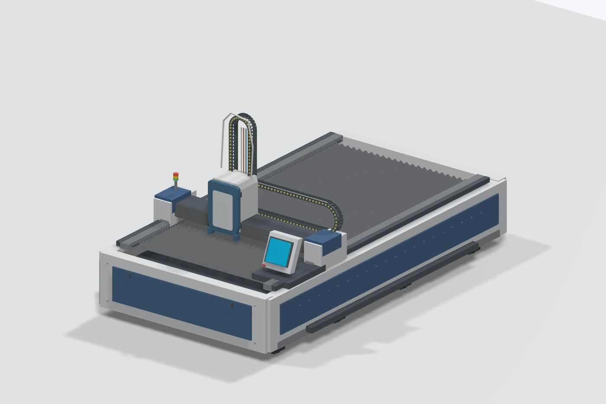

پیشنمایش ۸ — معرفی وابسته به اسکرول
از نیاز شما تا دستگاه آمادهٔ تولید
مرحله ۱
فرایند را مشخص کنید
برش، جوش، تمیزکاری یا مارکینگ؛ نقطهٔ شروع بر اساس خروجی موردنیاز شماست.
مرحله ۲
کانفیگ را انتخاب کنید
توان، ابعاد میز، سورس، هد و کنترلر پس از نیازسنجی تعیین میشوند.
